Met recht, vrede en blijdschap
Georganiseerd door de Bonisa Youth Club · collecte voor Stichting Bonisa
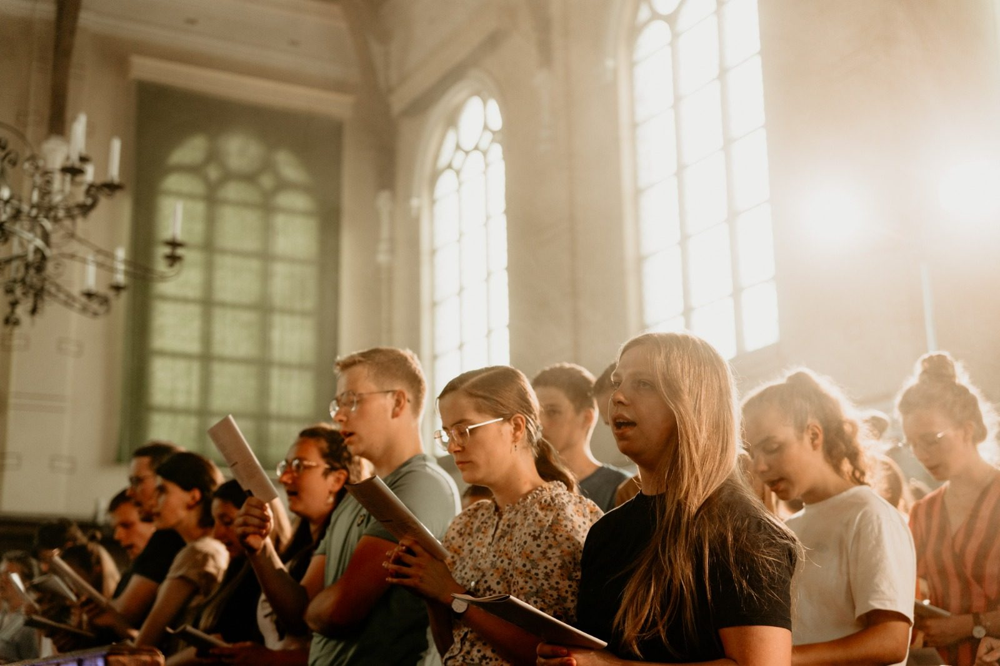
Jongerenzang 2025Romeinen 14:17
“Want het Koninkrijk Gods is niet spijs en drank, maar rechtvaardigheid, en vrede, en blijdschap door den Heiligen Geest.”
Waar God Koning is, wordt recht gedaan. Voor wie onrecht ondergaat is dat geen mooi idee, maar een vaste hoop.
Vrede met God door Christus, en daardoor vrede met elkaar. Een Koninkrijk dat niet met geweld komt, maar met genade.
Blijdschap door de Heilige Geest. Dat is de reden om samen, met opgeheven stem, te zingen.
Een volle kerk, honderden jongeren en één stem. Zo zag de jongerenzang in Katwijk eruit. Dankbaar kijken we terug, en we zien uit naar 2027.
Ik vond het super indrukwekkend en ik zou het iedereen aanraden.
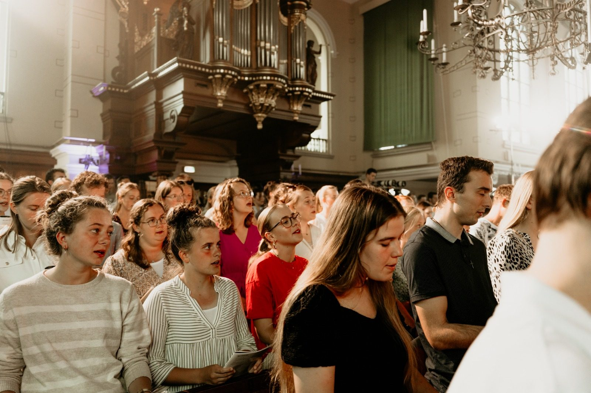
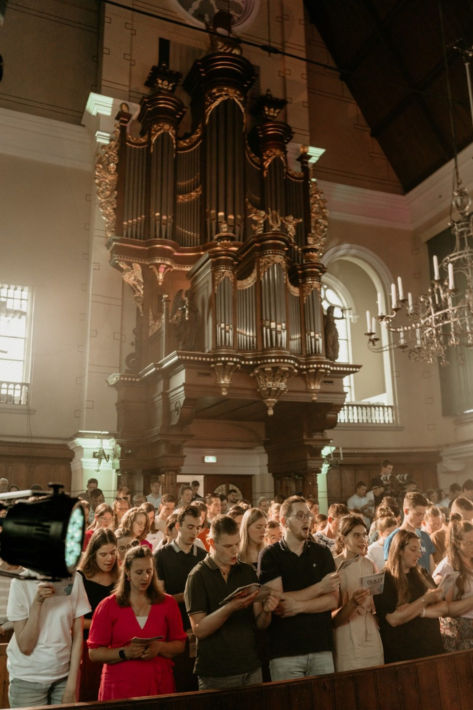
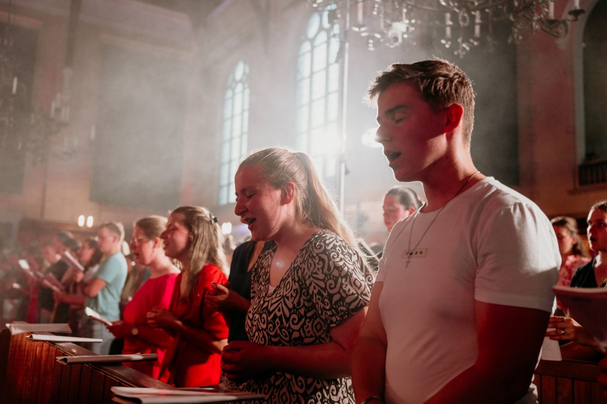
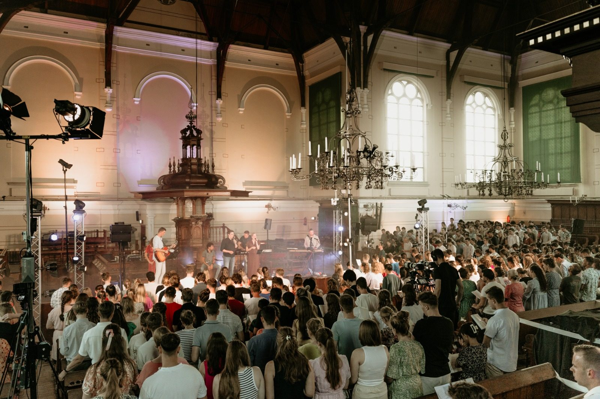
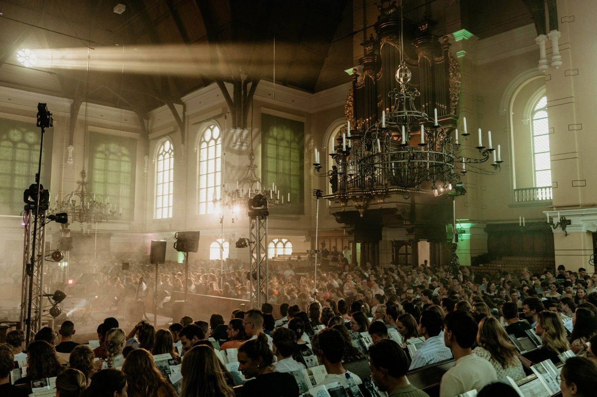
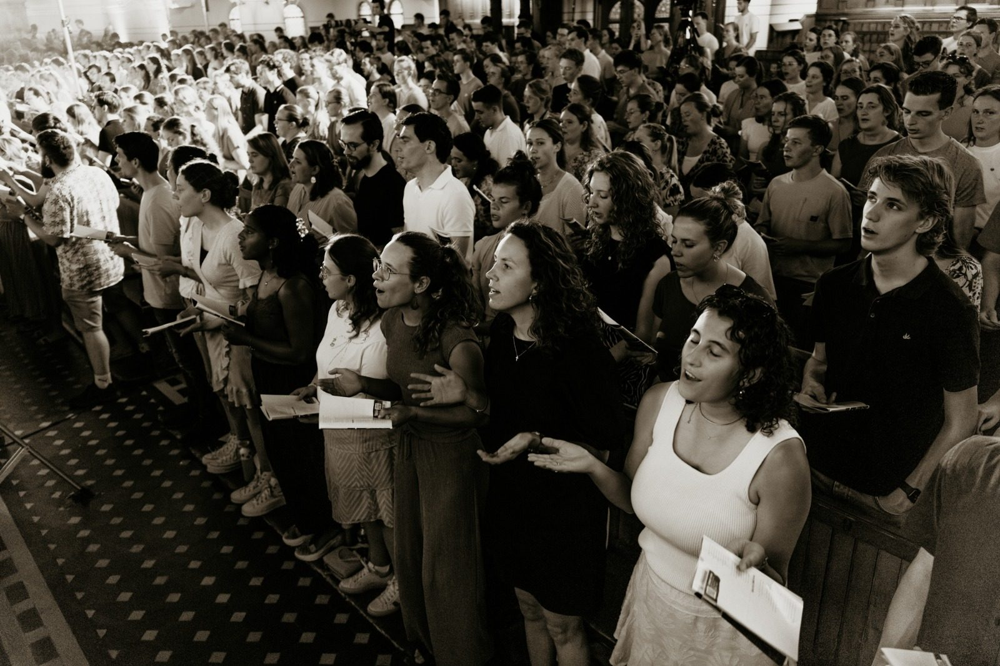
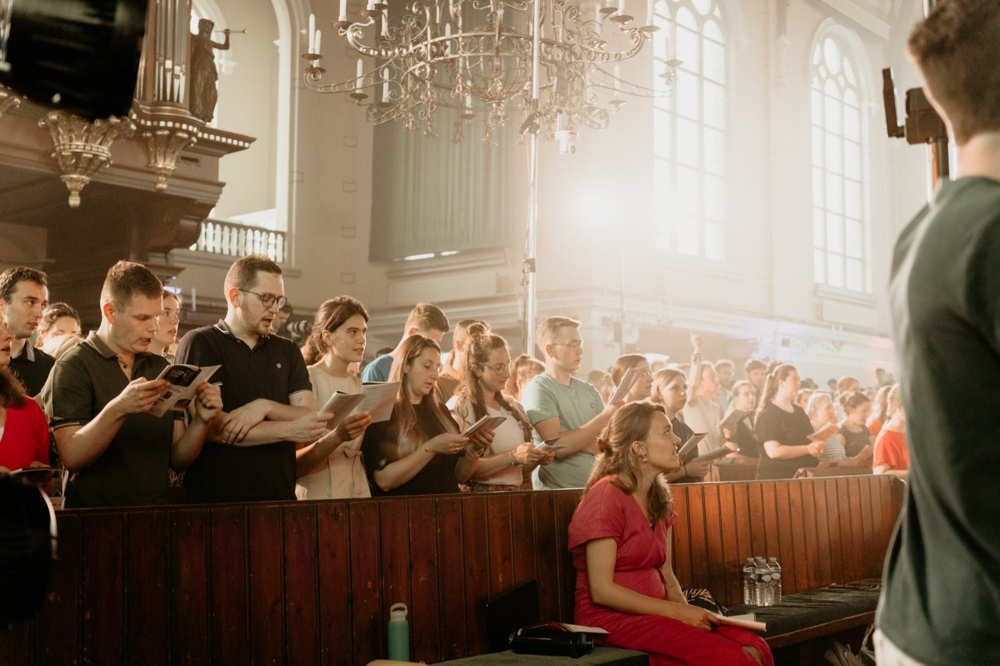
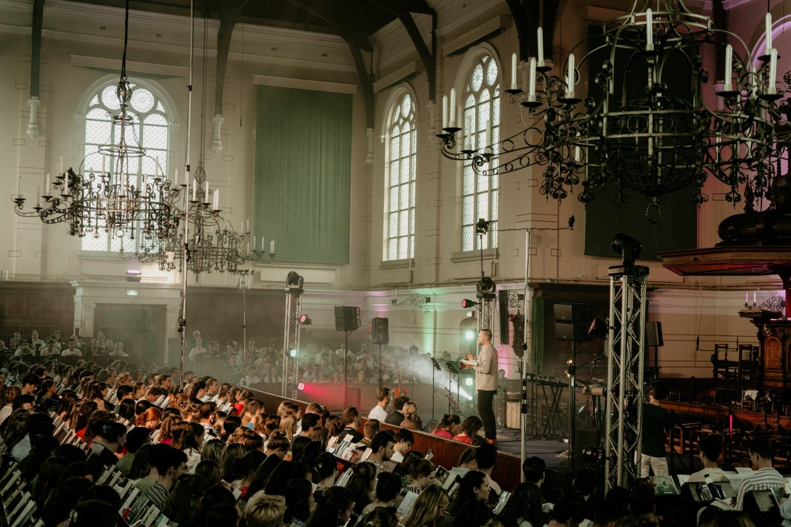
Deze avond is er dankzij Stichting Bonisa, een christelijke zendingsorganisatie uit Lisse. Samen met lokale christenen in Azië helpt Bonisa mensen in fysieke én geestelijke nood: met voedsel, hulp en een Bijbel in hun eigen taal.
De collecte van de jongerenzang gaat elk jaar naar een project van Bonisa. Dit jaar: [PROJECT 2027].
Op vrijdag 21 mei 2027 (D.V.) komen jongeren uit allerlei kerken samen in Katwijk om psalmen en liederen te zingen. Het thema van deze derde editie neemt ons mee naar het Koninkrijk van God: er al waar Christus regeert, en eens volkomen.
Een avond van samenzang en bezinning, begeleid door musici en geleid door hosts die je door de liederen heen nemen. Iedereen is welkom.
Host
Host · binnenkort bekend
€ 4,50 per persoon
Meld je aan, dan is je plaats gereserveerd. Tijdens de avond is er een collecte voor het werk van Stichting Bonisa.
Bestel je ticketMet je bestelling ga je akkoord met de algemene voorwaarden en de privacyverklaring.
Nieuwe Kerk Katwijk
Voorstraat 79, 2225 EM Katwijk aan Zee
Parkeren kan in de parkeergarage aan de Boulevard of aan de Tramstraat. Op het marktterrein is parkeren na 18:00 uur gratis.
Vragen? Mail jong@bonisa.nl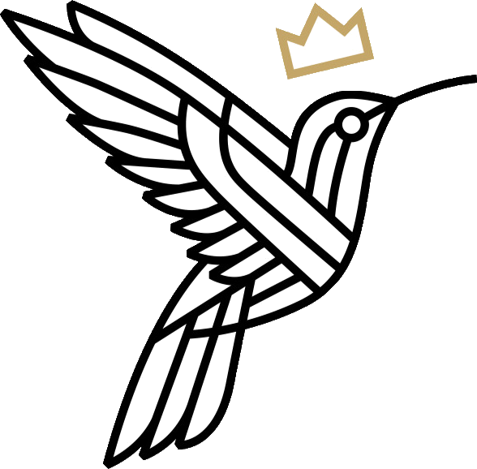
Shirts met een boodschap: Praise the Lord en Walk by faith, not by sight. Met elk shirt steun je het werk van Bonisa. Verkrijgbaar in XS t/m L. [Te koop tijdens de avond en online.]
Bekijk de collectie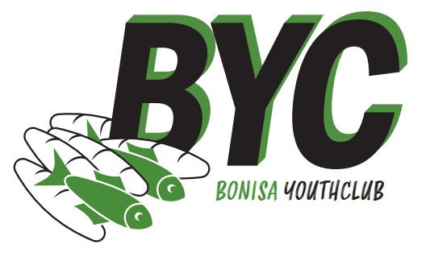
De Bonisa Youth Club is een groep jonge vrijwilligers van Stichting Bonisa. Wij jongeren organiseren voor andere jongeren: acties, ontmoetingen en avonden zoals deze jongerenzang.
Ons verlangen is dat jongeren in Nederland zien hoe groot de nood is, en hoe mooi de kansen zijn, in de zending in Azië. En dat ze daar zelf aan meedoen, met hun gebed, hun gaven en hun tijd.